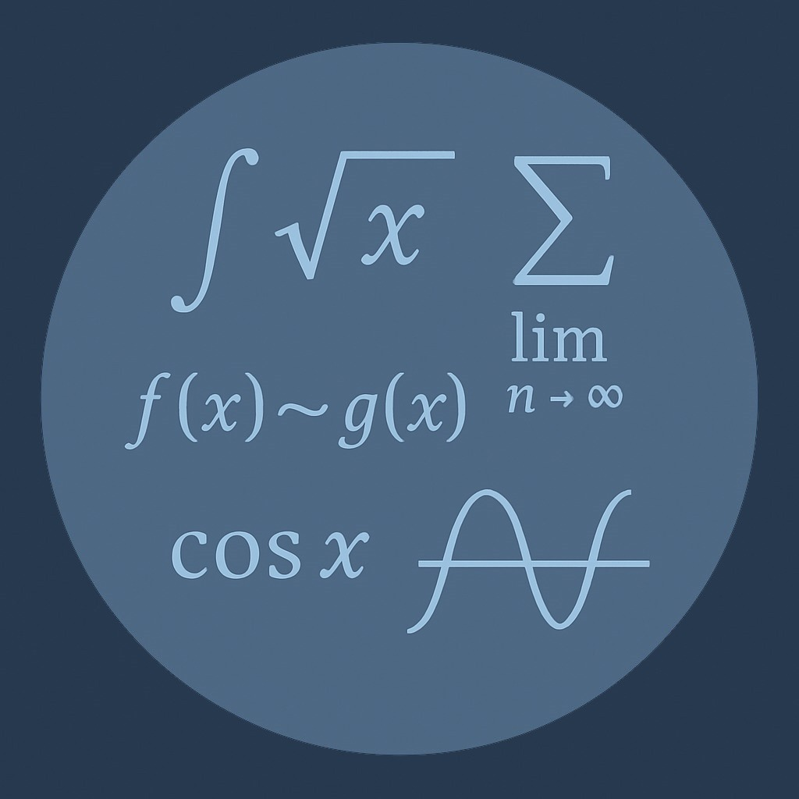

Pagina de Resurse
🔑 În continuare găsești materialele care ne-au ajutat cel mai mult în pregătirea pentru admitere, selectate pentru claritate și eficiență.
📘 Multe dintre aceste resurse acoperă capitole ce nu sunt predate la liceu, dar le considerăm esențiale pentru a vă forma o bază solidă înainte de examen.
Resurse Matematică
Sume Riemann
Kings rule
Trigonometrie
Altele

Resurse Informatică
Algoritmi
- Algoritmul lui Euclid prin scăderi repetate
- Ciurul lui Eratostene
- Baze de Numerație
- Algortmi de Sortare
Combinatorică
- Culegerea lui Iulian Stoleriu
- Numere Catalane
- Triunghiul lui Pascal
- Deranjamente 1
- Deranjamente 2
- Stars and Bars